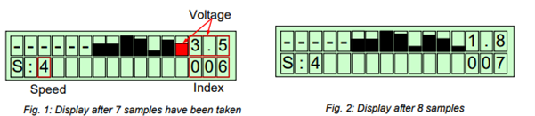

Bachelor of Science in Electronic Engineering
Semester Projects
Line Following Robot
A Line following robot was developed using a PIC microcontroller. The robot task was to successfully follow a path and decide the minimum distance to reach the final destination. The controller which was used for this was PIC16f877a. It was also used as an application where the robot carries the prepared order in a restaurant to deliver it to a specific table.
Face Detection using MATLAB
The Viola Jones algorithm was used to detect the face. This project was further used for an application in 2020. The advanced version of this project was to detect the faces with masks (KN95 & Surgical) in public places.
Automated Parking system
A parking plaza was automated by using Siemens PLC. The programming language used in this project was “Ladder programming”. The system was also able to detect the type of vehicle entering in the parking plaza by using image processing algorithms.
Home Automation
A fully automated home was designed by using PIC and Arduino controller. Every appliance was automated and can be operated with the help of “voice”, “Bluetooth” and “Web-based application”.
Water Bottle filling system
A conveyer belt was controlled with the help of Delta PLC. In addition, the PLC was also used to control the filling system. Sensors were deployed to detect an empty bottle and afterwards, the filling system activates automatically until the bottle is fully filled. The accuracy and latency were a challenge which was solved through programming and different additional sensors.
Bachelor Thesis
Self-Stabilizing un-manned aerial vehicle (Drone Quadcopter)
A control system was made using an onboard microprocessor and inertial measurement system. The main task of project is to stabilize the aerial vehicle at a certain height and location which can also detect obstacles and made decisions according to the flight plan. The aerial vehicle was able to lock a target and certain operations can be then performed for e.g. (Throwing water, Parcel Delivery etc.). The project won different competitions. A research paper was also published on this project. Afterwards, for more precise result, initial measurement unit was also upgraded with latest ublox global positioning system. The advanced control system can be implemented on any type of aerial vehicle (Tri, Penta & Hexacopter).
MSc in System Engineering & Engineering Management - Mechatronics
Semester Projects
Predicting the remaining useful life of bearing system using Machine Learning
The task was to define the predictive maintenance for bearings using different classification algorithms and to predict the remaining use full life (RUL) of the bearing / classify the operational condition of the bearing that whether it is running in normal condition or its running in anomaly and would be in failure any time. This was a serious problem as bearing is the essential part used in all the rotating machinery. For this task, six (run to failure) data sets from three different running conditions were utilized.
The given data acquisition parameters were: i) Vibration signal with a sampling frequency of 25.6 kHz where 2560 samples were recorded each 10 seconds. ii) Temperature signals with a sampling frequency of 10Hz where 600 sample were recorded each minute. The classification algorithm used for this task was Support Vector Machine (SVM). The approach used to solve the problem starts with the first step which is the sampling of the given data sets through MATLAB. This leads to the next step which is using feature extraction technique. After feature extraction of the data sets, the data sets were trained and tested using the SVM classification algorithm.
A non-linear control system by designing a controller for Apollo11 mission
The task was to derive a nonlinear state space model of the system based on first principles with the states: mass m, height and its derivative, and input: derivative of mass. Linearized the system model in suitable operation point. Analyse the system behavior, i.e., stability, controllability, observability, as necessary. In addition, a state space controller design was also needed to be designed based on either the linear quadratic or pole placement approach. Afterwards, a state observer was also developed and designed assuming that only the position of the cart is measurable.
Designed a Data Logger on Atmega328
A data logger was designed on Atmega328. The AVR system is to be used as a data logger with a RS232 interface. Afterwards, the program was also tested on LabView.
The conditions were:
The voltage at the analogue input A0 is recorded and displayed as a bar graph in the upper LCD line. After the recording of the waveform is started dashes are displayed in the upper LCD line indicating that no samples have been read in. During sampling the current sample is displayed at the most right position and the previous samples are shifted to the left (Fig. 2). Additionally, the voltage and the index of the current sample are displayed (Fig. 1).

All samples are stored in an internal buffer of at least 100 samples. If the buffer has been completely filled the index of the current sample points to the end of the buffer and the oldest sample is discarded. Recording of the samples is started by pressing key ‘A’ and stopped by pressing key ‘B’. The sampling rate can be selected by pressing key ‘1’(lowest speed) to ‘9’ (highest speed) when recording is stopped. The selected speed is displayed at the LCD. After recording has been stopped the recorded waveform can be examined by shifting the display window. For adjusting the display window the potentiometer 2 or the keypad may be used. As in the recording mode the voltage and the index of the right most sample are shown on the LCD.
Master Thesis
Enabling Narrowband IoT in complex Building automation network
Because of the limitation of short-range protocols i.e., ZigBee, Bluetooth, WLAN etc. in the building automation sector, a new gateway with long range Narrowband IoT protocol was developed by using u-blox SARA N211 chip. This emerging and latest gateway protocol technology provides the secure wireless communication with the Vodafone cellular service along with 2500 data points. The gateway was capable of converting any protocol data to the Narrowband IoT protocol so this project can also be implemented in already established building automation networks. The data was monitored on the cloud service.
The hardware was designed on Altium software by using Wurth Electronics components and the driver was developed on Linux Embedded C programming. The project was done with MBS GmBH and CS Lab, Krefeld Germany. Additional workshop was also attended in Hilversum, Netherlands at SODAQ office in order to understand the hardware communication of ublox and Vodafone NarrowBand IoT kit with the gateway. The project was successfully completed before the deadline and the prototype was presented on many platforms.